En la Parte 3 aprendiste a construir tablas, relacionarlas y protegerlas. La normalización responde a una pregunta que viene antes: ¿están bien repartidos los datos entre las tablas? Es el conjunto de reglas con el que se evita que los mismos datos se repitan y se contradigan.
La palabra asusta, pero la idea es muy sencilla: cada dato debe vivir en un solo sitio. Las «formas normales» son tres comprobaciones, de la más básica a la más fina, para saber si lo cumples.
Como en el resto del manual, cada punto tiene dos mitades: primero sin código (tablas dibujadas a mano, con datos de ejemplo) y después con código (el mismo razonamiento ejecutado en PostgreSQL, con capturas reales).
Al terminar serás capaz de:
¿Qué es?, ¿para qué sirve?, ¿por qué lo necesito?, ¿cómo funciona?, primero sin código, paso a paso con código, código y resultado (con captura real), ejemplos, profundizando, ejercicio, solución, error habitual, buena práctica y comprobación.
Partimos de una «hoja» de ventas de nuestra tienda, con todos los datos en una sola tabla. Cada fila es un producto de un pedido. A lo largo de la parte la iremos repartiendo en tablas bien diseñadas.
Redundancia es guardar el mismo dato en más de un sitio. Parece inofensivo («copio el nombre y así lo tengo a mano»), pero provoca tres problemas, llamados anomalías:
Para reconocer, al ver una tabla, si está mal repartida. Si puedes provocar alguna de las tres anomalías, la tabla necesita rediseño.
Las anomalías no se notan al principio, con pocos datos y una sola persona. Aparecen con el uso: cuando hay cientos de filas y alguien cambia un email en un sitio y no en otro. Entonces ya hay datos corruptos, y corregirlos a mano es muy caro.
Una tabla «plana» (con todo mezclado) repite en cada fila los datos del cliente, del producto y del pedido. Esa repetición es la fuente de las tres anomalías:
| Anomalía | Causa | Ejemplo |
|---|---|---|
| Modificación | El mismo dato está en varias filas | Ana tiene dos emails distintos |
| Inserción | Una fila exige datos de varias cosas a la vez | No se puede guardar un producto sin un pedido |
| Borrado | Una fila guarda datos de varias cosas a la vez | Al borrar el pedido de Luis desaparece Luis |
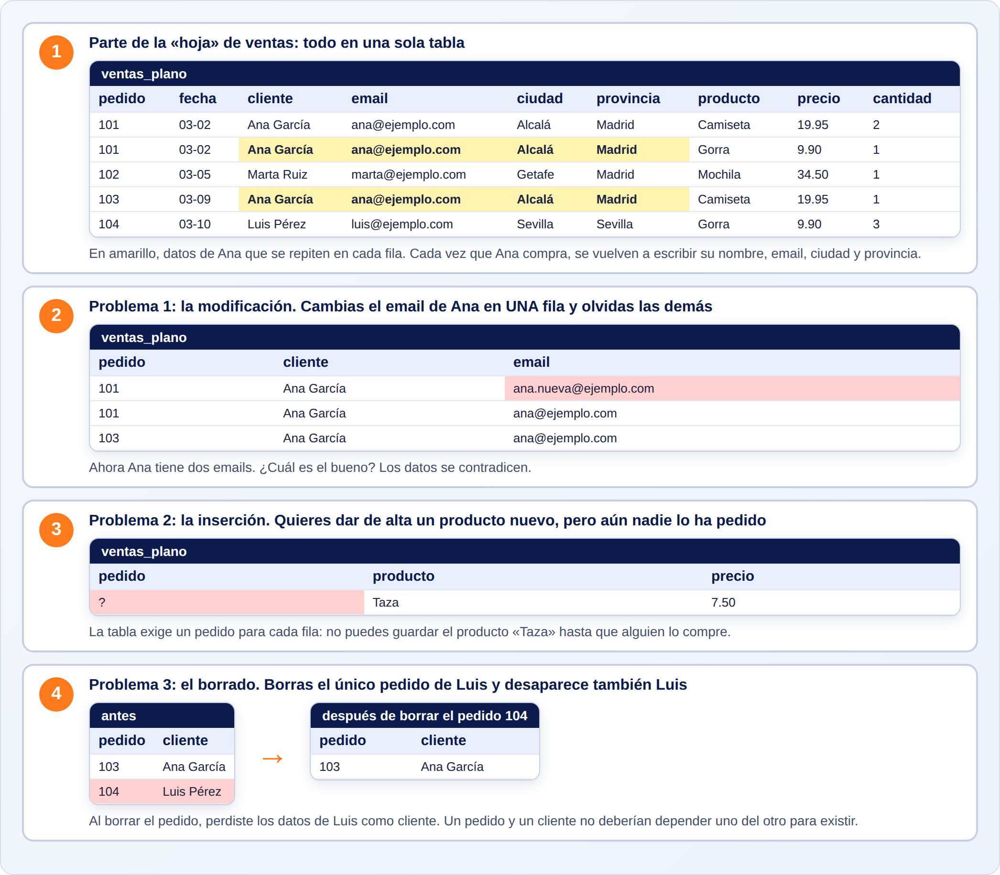
Qué ves en la imagen. Paso 1: la tabla con todos los datos mezclados; en amarillo, lo que se repite de Ana. Paso 2: cambias el email de Ana en una sola fila (rojo) y queda con dos emails. Paso 3: intentas dar de alta un producto nuevo sin pedido y la tabla lo impide. Paso 4: al borrar el único pedido de Luis, Luis desaparece. Compruébalo con tu dedo sobre la figura antes de seguir.
(pedido, producto): cada pareja pedido-producto es una fila.CREATE TABLE ventas_plano ( pedido integer, fecha date, cliente text, email text, ciudad text, provincia text, producto text, precio numeric(10, 2), cantidad integer, PRIMARY KEY (pedido, producto) ); INSERT INTO ventas_plano VALUES (101, '2026-03-02', 'Ana García', 'ana@ejemplo.com', 'Alcalá', 'Madrid', 'Camiseta', 19.95, 2), (101, '2026-03-02', 'Ana García', 'ana@ejemplo.com', 'Alcalá', 'Madrid', 'Gorra', 9.90, 1), (102, '2026-03-05', 'Marta Ruiz', 'marta@ejemplo.com', 'Getafe', 'Madrid', 'Mochila', 34.50, 1), (103, '2026-03-09', 'Ana García', 'ana@ejemplo.com', 'Alcalá', 'Madrid', 'Camiseta', 19.95, 1), (104, '2026-03-10', 'Luis Pérez', 'luis@ejemplo.com', 'Sevilla', 'Sevilla','Gorra', 9.90, 3); SELECT * FROM ventas_plano ORDER BY pedido, producto;
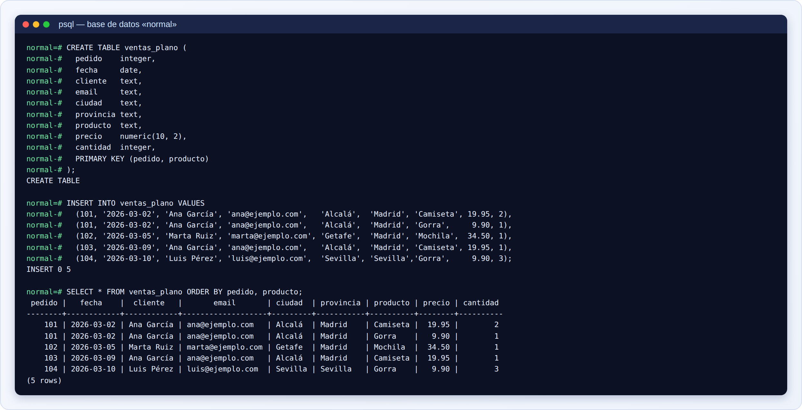
Qué ves en la imagen. PRIMARY KEY (pedido, producto) es una clave compuesta: una fila por cada producto de cada pedido. El SELECT muestra cinco filas. Fíjate en cuántas veces se repite «Ana García», su email, su ciudad y su provincia (tres veces cada uno), y en que «Camiseta» y «Gorra» repiten también su precio.
UPDATE ventas_plano SET email = 'ana.nueva@ejemplo.com' WHERE pedido = 101 AND producto = 'Camiseta'; SELECT DISTINCT cliente, email FROM ventas_plano WHERE cliente = 'Ana García';
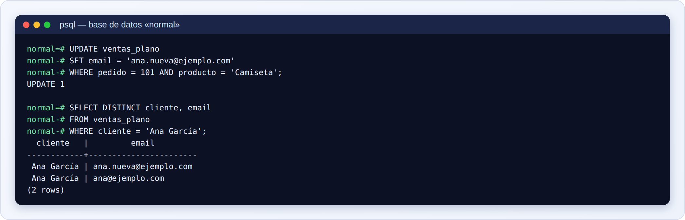
Qué ves en la imagen. El UPDATE cambia el email solo en la fila del pedido 101 con la camiseta (UPDATE 1: una fila). La consulta con DISTINCT (sin repetidos) devuelve dos combinaciones para Ana García: el email nuevo y el antiguo. Los datos se contradicen, y la tabla no sabe cuál es el correcto.
INSERT INTO ventas_plano (producto, precio) VALUES ('Taza', 7.50);
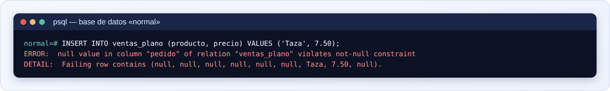
Qué ves en la imagen. Intentamos guardar el producto «Taza» con su precio. La clave (pedido, producto) exige un pedido, y como no hay, el gestor responde null value in column "pedido" ... violates not-null constraint. El producto no puede existir en la base de datos hasta que alguien lo compre.
DELETE FROM ventas_plano WHERE pedido = 104; SELECT DISTINCT cliente FROM ventas_plano ORDER BY cliente;
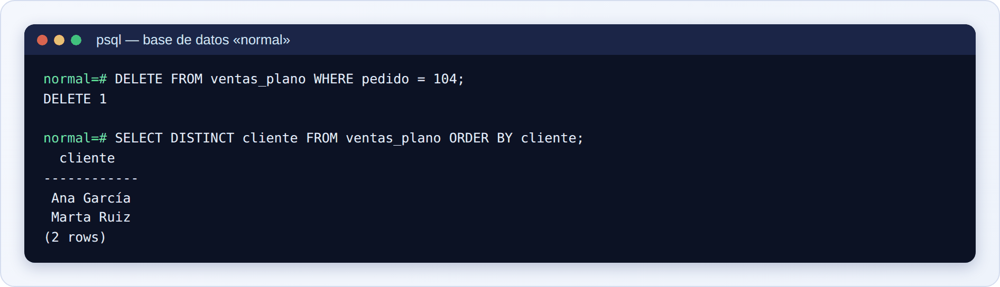
Qué ves en la imagen. DELETE ... WHERE pedido = 104 borra una fila (DELETE 1). La consulta de clientes distintos devuelve solo Ana y Marta: Luis ha desaparecido de la base de datos, aunque era un cliente real, solo porque su único pedido se borró.
Una agenda donde cada fila repite la dirección de la empresa. Si la empresa se muda, hay que cambiar muchas filas; si olvidas una, la empresa tiene dos direcciones.
Una academia guardaba en una sola tabla alumno, curso y profesor. Al cambiar el teléfono de un profesor, quedaron tres teléfonos distintos para la misma persona, y nadie sabía cuál era el vigente.
La redundancia no siempre es un error. A veces se repite un dato a propósito (punto 4.6). Lo grave es la redundancia que nadie controla.
Por qué el gestor no te avisa. Para PostgreSQL, «Ana García» con dos emails son filas válidas: él no sabe que describen a la misma persona. Las reglas de la normalización las pones tú con el diseño.
Las anomalías crecen con el tamaño. Con 5 filas son un fastidio; con 5 millones, un problema que requiere proyectos de limpieza de datos.
clientes separada: un pedido borrado ya no arrastra al cliente, porque el cliente es una fila propia.Pensar que repetir datos «hace las consultas más fáciles». Hace las lecturas algo más cómodas y las escrituras peligrosas.
-- Mal: el email del cliente repetido en cada fila de venta UPDATE ventas_plano SET email = 'nuevo@ejemplo.com' WHERE pedido = 101 AND producto = 'Camiseta';
Antes de crear una tabla, pregúntate para cada columna: «¿este dato describe lo mismo que la fila, o describe otra cosa?». Si describe otra cosa, probablemente pertenece a otra tabla.
Para cualquier tabla tuya, intenta provocar las tres anomalías a mano: ¿puedo cambiar un dato en un sitio y olvidar otro? ¿Puedo guardar una cosa sin otra? ¿Puedo perder una cosa al borrar otra? Si respondes «sí» a alguna, hay que normalizar.
Una tabla cumple la primera forma normal (1FN) cuando cada celda contiene un solo valor (un valor «atómico», que no se puede dividir con sentido) y no hay grupos de columnas repetidas.
Para que cada dato se pueda buscar, contar, ordenar y enlazar por separado. Es la base de todas las demás formas normales.
Con una lista dentro de una celda no puedes contar cuántas veces se vendió un producto, comprobar que el producto existe ni cambiar uno solo de los valores. Y con columnas repetidas (producto1, producto2...) la tabla se queda pequeña o llena de huecos.
Hay dos señales de que no se cumple la 1FN:
telefono1, telefono2, telefono3.La solución es siempre la misma: una fila por cada valor (en la misma tabla, o en otra tabla enlazada si el valor es una cosa con vida propia).
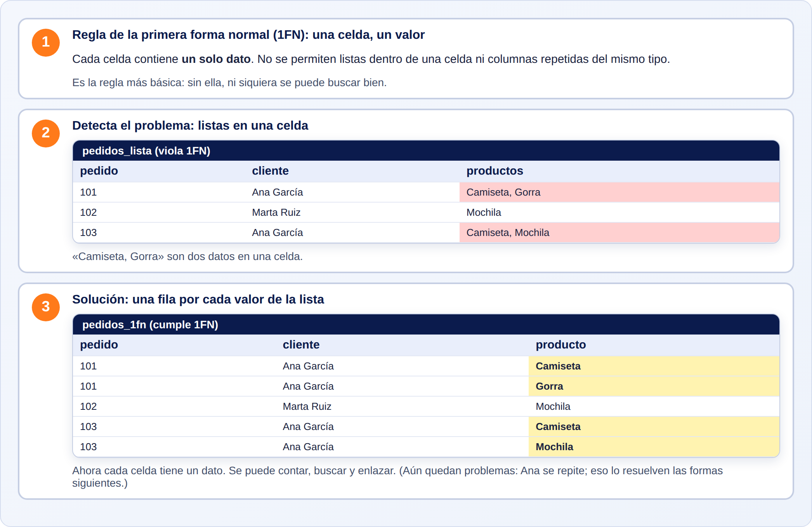
Qué ves en la imagen. Paso 1: la regla. Paso 2: la tabla pedidos_lista, con dos celdas que contienen listas (en rojo). Paso 3: la solución, una fila por cada producto de cada pedido (en amarillo, las filas nuevas). Ahora cada celda tiene un único dato.
string_to_array (convierte el texto en una lista) y unnest (convierte una lista en filas).CREATE TABLE ... AS SELECT.CREATE TABLE pedidos_lista ( pedido integer PRIMARY KEY, cliente text, productos text -- ¡varios productos en una celda! ); INSERT INTO pedidos_lista VALUES (101, 'Ana García', 'Camiseta, Gorra'), (102, 'Marta Ruiz', 'Mochila'), (103, 'Ana García', 'Camiseta, Mochila'); SELECT count(*) AS pedidos_con_camiseta FROM pedidos_lista WHERE productos LIKE '%Camiseta%';
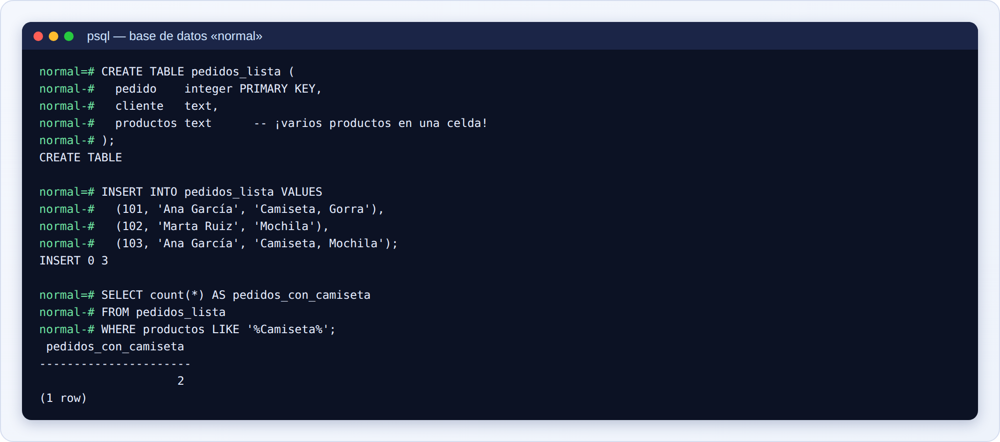
Qué ves en la imagen. productos text guarda «Camiseta, Gorra» como un único texto. La consulta LIKE '%Camiseta%' cuenta los pedidos cuyo texto contiene esa palabra (2), pero no distingue «Camiseta» de «Camiseta térmica», ni cuenta unidades, ni garantiza que el producto exista.
SELECT pedido, cliente, unnest(string_to_array(productos, ', ')) AS producto FROM pedidos_lista ORDER BY pedido, producto;
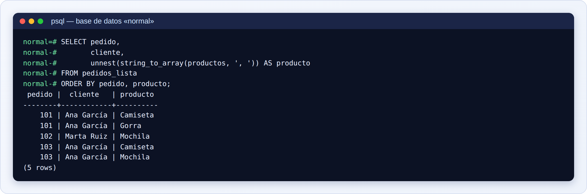
Qué ves en la imagen. string_to_array(productos, ', ') parte el texto por cada coma y espacio; unnest(...) convierte esa lista en filas. El resultado son cinco filas, una por cada producto de cada pedido. Los valores ya son atómicos.
CREATE TABLE pedidos_1fn AS SELECT pedido, cliente, unnest(string_to_array(productos, ', ')) AS producto FROM pedidos_lista; SELECT producto, count(*) AS pedidos FROM pedidos_1fn GROUP BY producto ORDER BY producto;
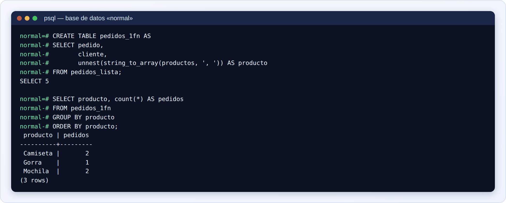
Qué ves en la imagen. CREATE TABLE ... AS SELECT crea una tabla nueva con el resultado de la consulta (SELECT 5 indica que tiene cinco filas). Ahora GROUP BY producto agrupa y cuenta: Camiseta aparece en 2 pedidos, Gorra en 1 y Mochila en 2. Antes era imposible hacer esto con precisión.
telefonos = '600111, 910222' pasa a ser dos filas en una tabla de teléfonos, una por número.
Un formulario guardaba las «aficiones» como texto separado por comas. Al querer enviar una oferta a los aficionados al senderismo, la búsqueda devolvía también «senderismo urbano» y «no senderismo». Pasar a una fila por afición lo resolvió.
¿Qué es «atómico»? Depende de lo que vayas a hacer con el dato. Un nombre completo en una columna es atómico si nunca vas a buscar por apellido; si vas a hacerlo, mejor separar nombre y apellidos. Una fecha es atómica aunque tenga día, mes y año, porque el gestor tiene tipos y funciones para trabajar con ella.
Arreglos y JSON. PostgreSQL permite guardar listas (arrays) y JSON dentro de una columna (Parte 6). Es útil en casos concretos, pero rompe la 1FN a propósito: solo conviene cuando no necesitas buscar ni enlazar los elementos por separado.
La 1FN no resuelve la redundancia. Tras la figura 4.2-d, Ana sigue repetida en cada fila. Eso lo resuelven las dos formas siguientes.
(1, 'Ana', 'Madrid, Alcalá')? ¿Y esta tabla: (id, nombre, hijo1, hijo2, hijo3)?contactos(id, nombre, telefonos) donde telefonos es una lista separada por comas.contactos (usa string_to_array y unnest).hijo1, hijo2, hijo3).telefonos(contacto_id, numero) con una fila por cada teléfono de cada contacto.SELECT id AS contacto_id, unnest(string_to_array(telefonos, ', ')) AS numero FROM contactos;
Resolver las columnas repetidas añadiendo más columnas («hijo4», «hijo5»...), o las listas con separadores raros (;, |).
-- Mal: columnas repetidas CREATE TABLE personas_mal (id integer PRIMARY KEY, nombre text, hijo1 text, hijo2 text, hijo3 text); -- Bien: una fila por hijo CREATE TABLE hijos (persona_id integer, nombre text);
Si ves un número en el nombre de una columna (telefono1, producto2), o un separador dentro de los datos, para: falta una fila o una tabla.
Para cada tabla pregúntate: ¿cada celda tiene un solo dato? ¿Hay columnas que se repiten con un número? Si la respuesta a la segunda es «sí», hay que pasar a filas.
Una tabla está en segunda forma normal (2FN) cuando cumple la 1FN y cada dato depende de la clave completa, no solo de una parte de ella. Solo tiene sentido cuando la clave primaria está formada por varias columnas (clave compuesta).
Una dependencia significa «el valor de A determina el valor de B»: si sé el producto, sé su precio. Se escribe producto → precio.
Para que los datos que pertenecen a una sola parte de la clave (el precio es del producto, no de la pareja pedido-producto) vivan en su propia tabla y no se repitan en cada fila.
En nuestra tabla plana, el precio de la camiseta se repite en cada pedido donde aparece. Si cambia su precio, hay que cambiarlo en muchas filas. Y la fecha del pedido se repite en cada línea del pedido.
(pedido, producto).En nuestro caso:
| Columna | Depende de | ¿Cumple 2FN? |
|---|---|---|
| fecha, cliente, email, ciudad, provincia | Solo del pedido | No |
| precio | Solo del producto | No |
| cantidad | De la pareja (pedido, producto) | Sí |
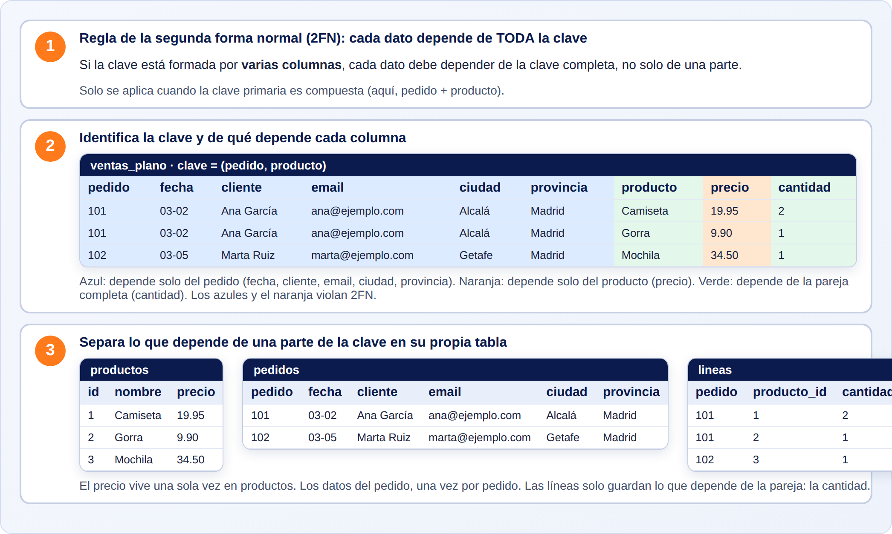
Qué ves en la imagen. Paso 2: cada columna coloreada según de qué depende (azul: solo del pedido; naranja: solo del producto; verde: de la pareja). Paso 3: el resultado: productos con el precio, pedidos con los datos del pedido y lineas con la cantidad, que es lo único que depende de la pareja.
producto → precio con una consulta: si ningún producto tiene dos precios distintos, la dependencia se cumple.productos con los productos y precios distintos.pedidos_2fn con los datos que dependen del pedido.lineas_2fn con la pareja pedido-producto y la cantidad, enlazando con el id del producto.-- ¿Cada producto tiene un único precio? (si sale alguna fila, NO) SELECT producto FROM ventas_plano GROUP BY producto HAVING count(DISTINCT precio) > 1; -- ¿Cuántas veces se repite cada precio? SELECT producto, precio, count(*) AS veces_repetido FROM ventas_plano GROUP BY producto, precio ORDER BY producto;
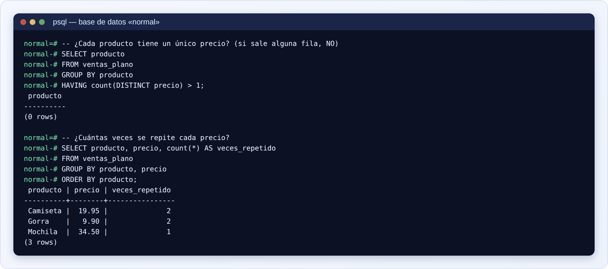
Qué ves en la imagen. La primera consulta busca productos que tengan más de un precio distinto (HAVING count(DISTINCT precio) > 1): devuelve 0 filas, es decir, cada producto tiene un único precio: la dependencia se cumple. La segunda muestra cuántas veces se repite cada precio: la camiseta y la gorra, dos veces cada una. Eso es redundancia: el mismo precio escrito varias veces.
CREATE TABLE productos ( id integer GENERATED ALWAYS AS IDENTITY PRIMARY KEY, nombre text NOT NULL UNIQUE, precio numeric(10, 2) NOT NULL ); INSERT INTO productos (nombre, precio) SELECT DISTINCT producto, precio FROM ventas_plano ORDER BY producto; SELECT * FROM productos ORDER BY id;
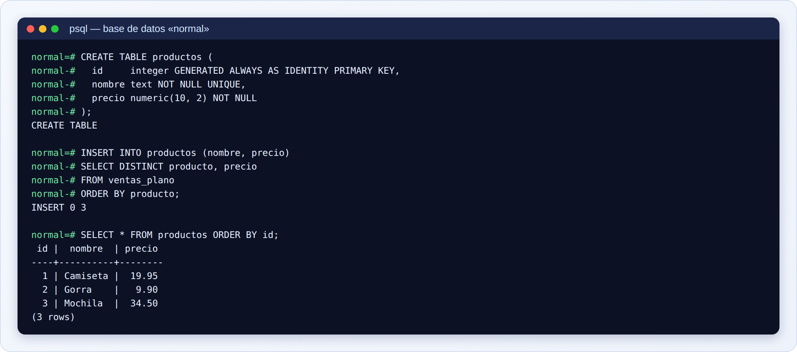
Qué ves en la imagen. INSERT ... SELECT DISTINCT producto, precio FROM ventas_plano copia a la tabla nueva los productos distintos con su precio (INSERT 0 3: tres filas). El id lo genera la identidad automática. Ahora el precio de cada producto está en un solo sitio.
CREATE TABLE pedidos_2fn AS SELECT DISTINCT pedido, fecha, cliente, email, ciudad, provincia FROM ventas_plano; CREATE TABLE lineas_2fn AS SELECT v.pedido, p.id AS producto_id, v.cantidad FROM ventas_plano v JOIN productos p ON p.nombre = v.producto; SELECT * FROM pedidos_2fn ORDER BY pedido; SELECT * FROM lineas_2fn ORDER BY pedido, producto_id;
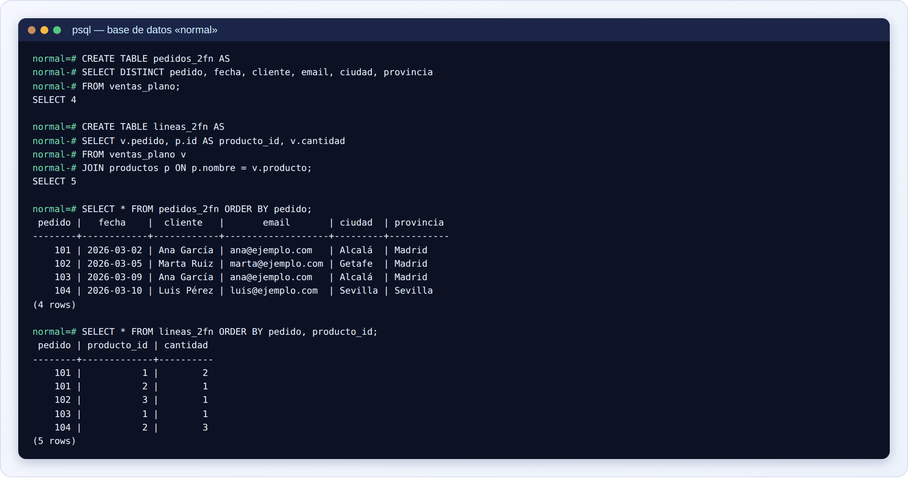
Qué ves en la imagen. pedidos_2fn tiene una fila por pedido (cuatro, sin repetir fecha ni cliente por línea). lineas_2fn tiene una fila por cada producto de cada pedido (cinco), con la cantidad y el producto_id que apunta a productos. La unión con JOIN ... ON p.nombre = v.producto convierte el nombre del producto en su número.
En una tabla de matrículas con clave (alumno, curso), el nombre del curso depende solo del curso: va a la tabla de cursos.
Una tienda tenía la tabla lineas(pedido, producto, nombre_producto, precio, cantidad). Al subir el precio de un producto hubo que actualizar miles de filas y se dejaron algunas sin actualizar. Separar productos lo resolvió.
La 2FN solo existe con claves compuestas. Si la clave primaria es una sola columna (por ejemplo, un id), la 2FN se cumple automáticamente.
Precio actual frente a precio vendido. Aquí hemos quitado precio de las líneas, pero en una tienda real conviene guardar también el precio al que se vendió (punto 4.6): no es redundancia accidental, es un dato histórico.
Aún queda trabajo. pedidos_2fn todavía repite los datos del cliente y de la ciudad. Es la tercera forma normal.
notas(alumno, asignatura, nombre_asignatura, nota) con clave (alumno, asignatura), ¿qué columna viola la 2FN y por qué?producto → precio se cumple en ventas_plano.nombre_asignatura: depende solo de asignatura, que es una parte de la clave.asignaturas(id, nombre) y notas(alumno, asignatura_id, nota).SELECT producto FROM ventas_plano GROUP BY producto HAVING count(DISTINCT precio) > 1; devuelve 0 filas.Aplicar la 2FN sobre una tabla con una clave de una sola columna (no hay nada que comprobar), o dejar en la tabla de líneas datos del producto «por comodidad».
-- Mal: el nombre del producto repetido en cada línea CREATE TABLE lineas_mal (pedido_id integer, producto_id integer, nombre_producto text, cantidad integer);
Cuando una tabla tenga clave compuesta, revisa cada columna no clave con la pregunta: «¿cambiaría si cambiara solo una parte de la clave?».
Elige una tabla con clave compuesta. Para cada columna no clave, escribe de qué parte de la clave depende. Las que dependan de una sola parte se mueven a su tabla.
Una tabla está en tercera forma normal (3FN) cuando cumple la 2FN y ningún dato depende de otro dato que no sea la clave. Dicho de otro modo: todo dato depende de la clave, de toda la clave y de nada más que la clave.
Cuando A determina B y B determina C (A → B → C) se dice que C depende de A «a través de B»: una dependencia transitiva. La 3FN la elimina.
Para que los datos que describen otra cosa (el cliente, la ciudad) no se mezclen con la tabla de la cosa principal (el pedido).
En pedidos_2fn, cada pedido de Ana repite su email, su ciudad y su provincia. Si Ana se muda, hay que cambiar todos sus pedidos. La provincia, además, depende de la ciudad: «Alcalá → Madrid» se repite para todos los clientes de Alcalá.
En nuestro caso: pedido → cliente → email, ciudad y ciudad → provincia. Hay que crear clientes y ciudades.
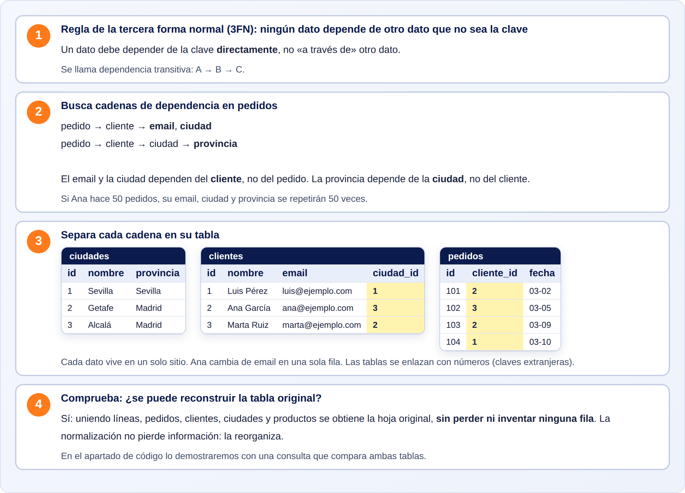
Qué ves en la imagen. Paso 2: las cadenas pedido → cliente → email/ciudad y ciudad → provincia. Paso 3: se crean ciudades y clientes, y pedidos guarda solo el número de cliente (en amarillo, los números de enlace). Paso 4: la comprobación de que la tabla original se puede reconstruir sin perder ni inventar filas.
ciudades, clientes, pedidos y lineas_pedido, con claves y relaciones.INSERT ... SELECT, en el orden correcto (primero las que no dependen de otras).EXCEPT: si no sobra ni falta ninguna fila, no has perdido información.-- ¿Cada cliente tiene un único email y ciudad? (filas = excepciones) SELECT cliente FROM pedidos_2fn GROUP BY cliente HAVING count(DISTINCT email) > 1 OR count(DISTINCT ciudad) > 1; -- ¿Cada ciudad tiene una única provincia? SELECT ciudad FROM pedidos_2fn GROUP BY ciudad HAVING count(DISTINCT provincia) > 1; -- ¿Cuántas veces se repiten los datos del cliente? SELECT cliente, email, ciudad, provincia, count(*) AS pedidos FROM pedidos_2fn GROUP BY cliente, email, ciudad, provincia ORDER BY cliente;
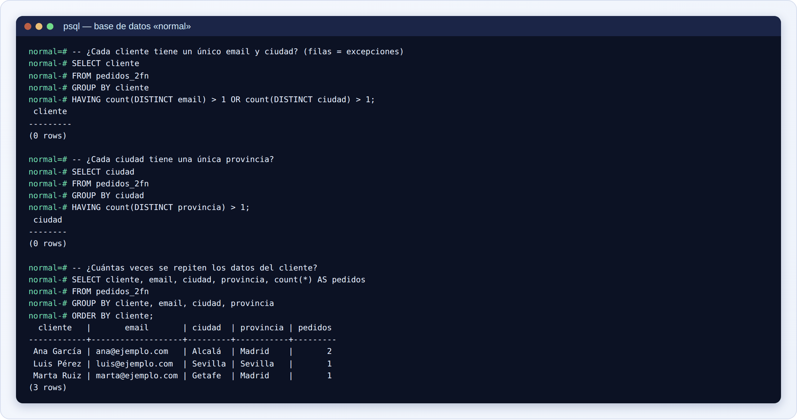
Qué ves en la imagen. Las dos primeras consultas devuelven 0 filas: cada cliente tiene un solo email y ciudad, y cada ciudad una sola provincia (las dependencias se cumplen). La tercera muestra la repetición: los datos de Ana (email, ciudad, provincia) están escritos tantas veces como pedidos tiene.
CREATE TABLE ciudades ( id integer GENERATED ALWAYS AS IDENTITY PRIMARY KEY, nombre text NOT NULL UNIQUE, provincia text NOT NULL ); CREATE TABLE clientes ( id integer GENERATED ALWAYS AS IDENTITY PRIMARY KEY, nombre text NOT NULL, email text NOT NULL UNIQUE, ciudad_id integer NOT NULL REFERENCES ciudades (id) ); CREATE TABLE pedidos ( id integer PRIMARY KEY, cliente_id integer NOT NULL REFERENCES clientes (id), fecha date NOT NULL ); CREATE TABLE lineas_pedido ( pedido_id integer NOT NULL REFERENCES pedidos (id), producto_id integer NOT NULL REFERENCES productos (id), cantidad integer NOT NULL CHECK (cantidad > 0), PRIMARY KEY (pedido_id, producto_id) );
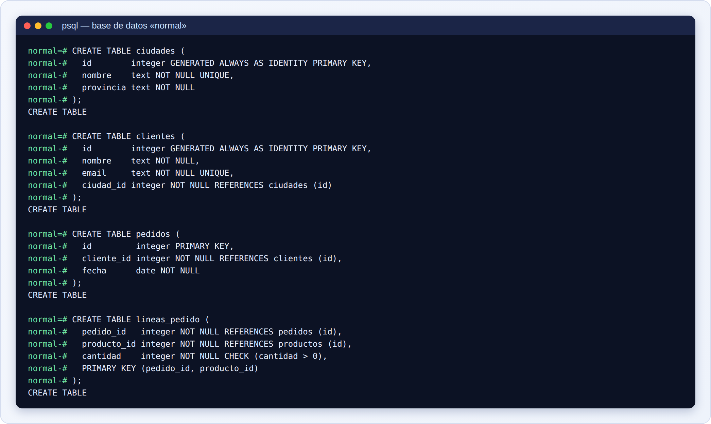
Qué ves en la imagen. ciudades guarda cada ciudad con su provincia una sola vez. clientes apunta a su ciudad con ciudad_id. pedidos apunta a su cliente con cliente_id. lineas_pedido apunta a pedidos y productos, con clave compuesta. Cada dato tiene su sitio.
INSERT INTO ciudades (nombre, provincia) SELECT DISTINCT ciudad, provincia FROM pedidos_2fn; INSERT INTO clientes (nombre, email, ciudad_id) SELECT DISTINCT p.cliente, p.email, c.id FROM pedidos_2fn p JOIN ciudades c ON c.nombre = p.ciudad; INSERT INTO pedidos (id, cliente_id, fecha) SELECT p.pedido, c.id, p.fecha FROM pedidos_2fn p JOIN clientes c ON c.email = p.email; INSERT INTO lineas_pedido (pedido_id, producto_id, cantidad) SELECT pedido, producto_id, cantidad FROM lineas_2fn; SELECT * FROM ciudades ORDER BY id; SELECT * FROM clientes ORDER BY id;
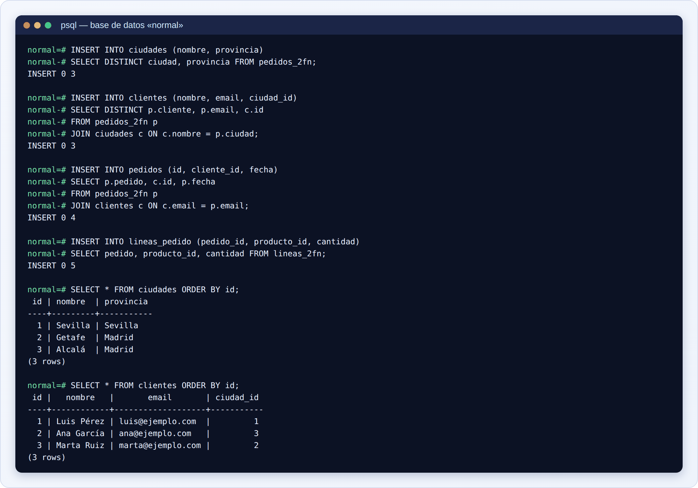
Qué ves en la imagen. Cada INSERT ... SELECT copia los datos que correspondan: INSERT 0 3 (tres ciudades), INSERT 0 3 (tres clientes), INSERT 0 4 (cuatro pedidos) e INSERT 0 5 (cinco líneas). Los JOIN convierten nombres en números de enlace (por ejemplo, el nombre de la ciudad en su ciudad_id). Los dos SELECT muestran las ciudades y clientes: cada uno aparece una sola vez.
CREATE VIEW ventas_reconstruida AS SELECT p.id AS pedido, p.fecha, c.nombre AS cliente, c.email, ci.nombre AS ciudad, ci.provincia, pr.nombre AS producto, pr.precio, l.cantidad FROM lineas_pedido l JOIN pedidos p ON p.id = l.pedido_id JOIN clientes c ON c.id = p.cliente_id JOIN ciudades ci ON ci.id = c.ciudad_id JOIN productos pr ON pr.id = l.producto_id; -- Filas de la tabla original que NO están en la reconstruida (debe salir 0) SELECT * FROM ventas_plano EXCEPT SELECT * FROM ventas_reconstruida; -- Filas de la reconstruida que NO estaban en la original (debe salir 0) SELECT * FROM ventas_reconstruida EXCEPT SELECT * FROM ventas_plano;
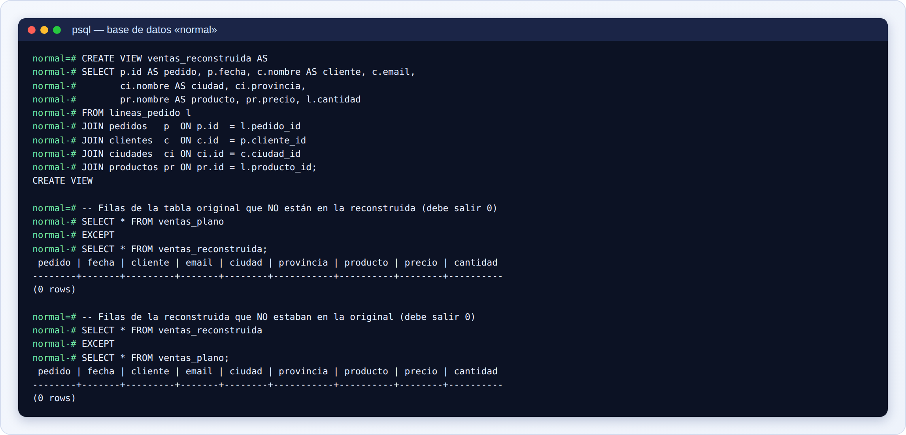
Qué ves en la imagen. La vista ventas_reconstruida vuelve a unir las cinco tablas para obtener la hoja original. EXCEPT devuelve las filas del primer resultado que no están en el segundo. Las dos comparaciones (original menos reconstruida y reconstruida menos original) devuelven 0 filas: las dos tablas contienen exactamente los mismos datos. La normalización ha reorganizado la información sin perder ni inventar nada.
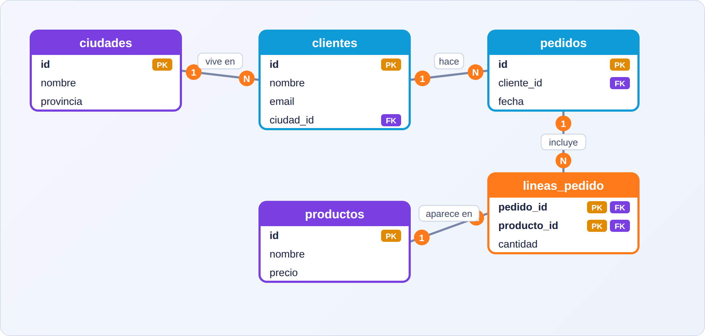
Qué ves en la imagen. Cinco tablas bien repartidas: ciudades, clientes, pedidos, lineas_pedido y productos, enlazadas con claves extranjeras.
UPDATE clientes SET email = 'ana.nueva@ejemplo.com' WHERE nombre = 'Ana García'; SELECT DISTINCT cliente, email FROM ventas_reconstruida WHERE cliente = 'Ana García'; DELETE FROM lineas_pedido WHERE pedido_id = 104; DELETE FROM pedidos WHERE id = 104; SELECT nombre FROM clientes ORDER BY nombre; INSERT INTO productos (nombre, precio) VALUES ('Taza', 7.50); SELECT nombre, precio FROM productos ORDER BY id;
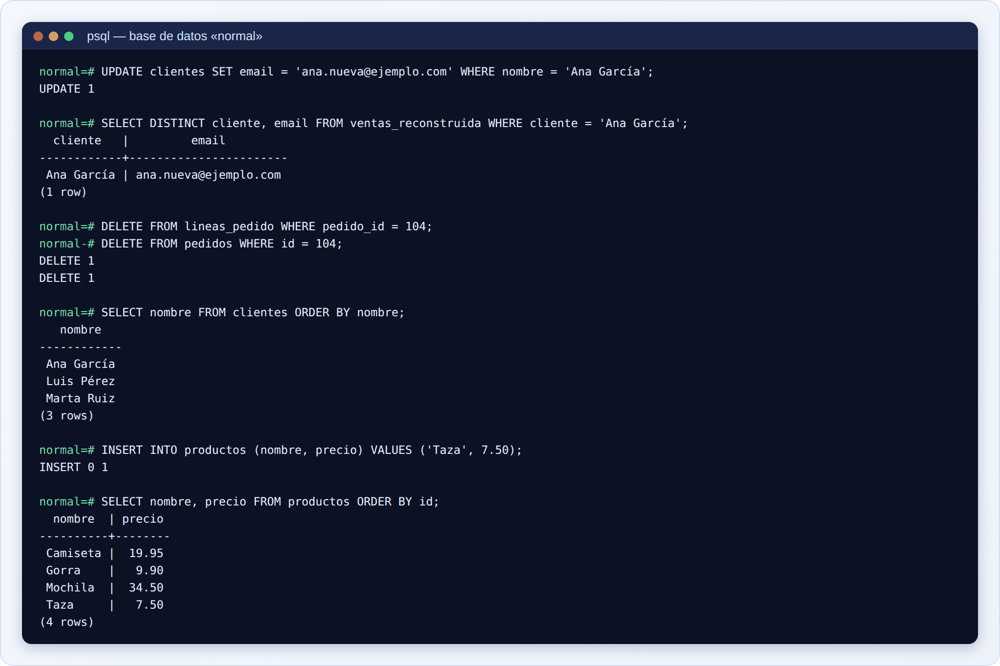
Qué ves en la imagen.
clientes (UPDATE 1); la vista muestra un único email para Ana en todos sus pedidos.INSERT 0 1) y aparece en productos.La provincia depende de la ciudad, no del cliente. Si la guardas en la tabla de clientes, repites «Madrid» para cada cliente de Alcalá. En una tabla ciudades, está una vez.
Una empresa guardaba en cada factura el nombre y la dirección del cliente. Cuando un cliente cambió de dirección fiscal, las facturas antiguas quedaron con la dirección vieja (que, en este caso, sí era correcto conservar, punto 4.6) pero las nuevas tenían direcciones distintas entre sí. Separar el cliente permitió decidir qué se conserva y qué se actualiza.
Otras formas normales. Existen formas más estrictas: la forma normal de Boyce-Codd (BCNF), la cuarta y la quinta. En la práctica, casi todos los diseños profesionales se detienen en la 3FN (o BCNF), que elimina la mayoría de los problemas reales.
Orden de rellenado. Al migrar datos, se llenan primero las tablas de las que otras dependen (ciudades, productos), después las que apuntan a ellas (clientes, pedidos) y al final las tablas intermedias.
Tablas temporales de migración. Las tablas pedidos_2fn y lineas_2fn eran solo un paso intermedio: una vez migrados los datos, se pueden borrar (DROP TABLE).
Las vistas reconstruyen la «hoja». Una vista como ventas_reconstruida permite que las aplicaciones o informes sigan viendo los datos como una tabla plana sin duplicarlos.
empleados(id, nombre, departamento_id, nombre_departamento), ¿qué columna viola la 3FN y por qué?pedidos_2fn, cada cliente tiene un solo email.nombre_departamento: depende de departamento_id, que no es la clave de la tabla (la clave es id).CREATE TABLE departamentos ( id integer PRIMARY KEY, nombre text NOT NULL ); CREATE TABLE empleados ( id integer PRIMARY KEY, nombre text NOT NULL, departamento_id integer NOT NULL REFERENCES departamentos (id) );
SELECT cliente FROM pedidos_2fn GROUP BY cliente HAVING count(DISTINCT email) > 1; devuelve 0 filas.Separar tablas y olvidar enlazarlas con claves extranjeras, o rellenarlas en orden incorrecto y fallar por claves que no existen.
-- Mal: se separa la ciudad pero no se enlaza CREATE TABLE clientes_mal (id integer PRIMARY KEY, nombre text, ciudad_nombre text); -- Bien: se enlaza con una clave extranjera CREATE TABLE clientes_bien (id integer PRIMARY KEY, nombre text, ciudad_id integer REFERENCES ciudades (id));
Después de normalizar, demuestra que no has perdido información reconstruyendo la tabla original y comparándola con EXCEPT.
Para cada tabla pregunta: ¿cada dato depende de la clave, de toda la clave y de nada más que la clave? Si alguno depende de otra columna, hay una tabla escondida.
Es el método para mirar una tabla que no has diseñado tú (o que has diseñado hace tiempo) y averiguar si necesita normalizarse, y cómo.
En la vida real casi nunca partes de cero: heredas hojas de cálculo, tablas de otros proyectos y bases de datos antiguas. Saber diagnosticarlas es una habilidad de todos los días.
Porque los problemas de diseño no avisan. Hay que ir a buscarlos con preguntas concretas y comprobarlos con datos reales.
Primero, señales de alerta en el diseño:
telefono1, producto2).Después, comprobar dependencias con consultas. Para saber si «A determina B»: agrupa por A y comprueba si B toma más de un valor.
SELECT A FROM tabla GROUP BY A HAVING count(DISTINCT B) > 1;
Si la consulta devuelve 0 filas, cada valor de A tiene un único valor de B en los datos actuales: la dependencia A → B se cumple. Si devuelve filas, esas filas son las excepciones: no hay dependencia.
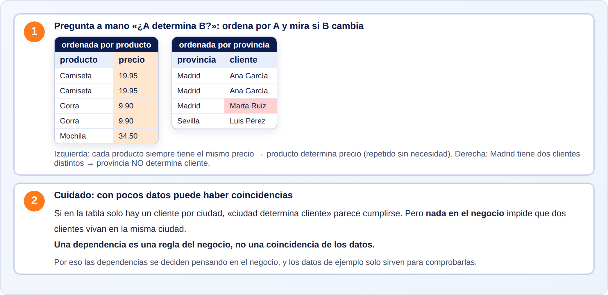
Qué ves en la imagen. Paso 1: ordenando por producto, el precio es siempre el mismo dentro de cada producto (producto determina precio). Ordenando por provincia, Madrid tiene dos clientes distintos (provincia no determina cliente). Paso 2: la advertencia más importante: una dependencia es una regla del negocio, no una coincidencia de los datos. Si en tu muestra solo hay un cliente por ciudad, «ciudad determina cliente» parece cumplirse, pero nada en el negocio lo garantiza.
GROUP BY A HAVING count(DISTINCT B) > 1.-- ¿Se cumple «producto determina precio»? 0 filas = sí, hay dependencia SELECT producto, count(DISTINCT precio) AS precios_distintos FROM ventas_plano GROUP BY producto HAVING count(DISTINCT precio) > 1; -- ¿Se cumple «pedido determina fecha»? SELECT pedido, count(DISTINCT fecha) AS fechas_distintas FROM ventas_plano GROUP BY pedido HAVING count(DISTINCT fecha) > 1; -- ¿Y «provincia determina cliente»? (si salen filas, NO hay dependencia) SELECT provincia, count(DISTINCT cliente) AS clientes_distintos FROM ventas_plano GROUP BY provincia HAVING count(DISTINCT cliente) > 1; -- Cuidado: «ciudad determina cliente» parece cumplirse... ¡solo por casualidad! SELECT ciudad, count(DISTINCT cliente) AS clientes_distintos FROM ventas_plano GROUP BY ciudad HAVING count(DISTINCT cliente) > 1;
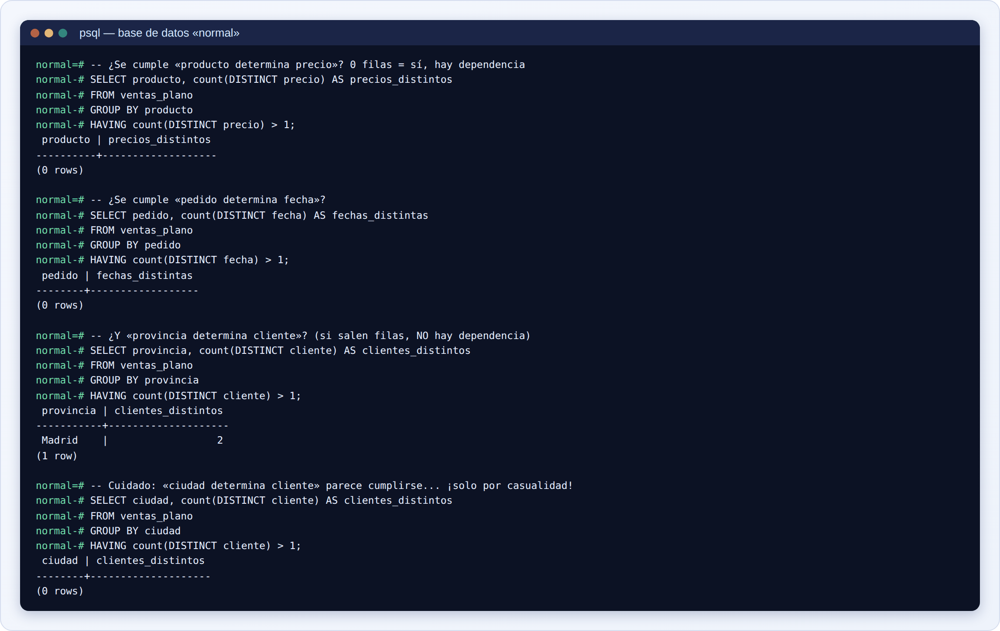
Qué ves en la imagen.
producto → precio: 0 filas. Se cumple, y tiene sentido de negocio: un producto tiene un precio.pedido → fecha: 0 filas. Se cumple: un pedido tiene una fecha.provincia → cliente: devuelve filas. No hay dependencia: Madrid tiene dos clientes distintos, así que no se puede determinar el cliente a partir de la provincia.ciudad → cliente: devuelve 0 filas. Los datos parecen cumplirla, pero es pura casualidad de la muestra: en la tienda real, dos clientes pueden vivir en Alcalá. Por eso la última consulta lleva el aviso: una dependencia se decide con el negocio, y los datos solo la confirman o la refutan.En una hoja de cálculo de alumnos, detectas que el nombre del curso aparece repetido para cada alumno. La pregunta curso → nombre_curso da 0 filas: hay que sacar una tabla cursos.
Antes de migrar una base de datos heredada, un equipo ejecuta decenas de comprobaciones de dependencias sobre las tablas principales para decidir qué tablas nuevas crear. Es el primer paso de cualquier proyecto de rediseño.
Falsos positivos y falsos negativos. Con pocos datos, una dependencia falsa puede parecer cierta (como ciudad → cliente). Con datos sucios, una dependencia verdadera puede parecer falsa (por ejemplo, «Madrid» y «madrid» cuentan como valores distintos).
Datos sucios. Si una comprobación devuelve excepciones inesperadas (el mismo producto con dos precios), puede ser un error de datos que conviene investigar antes de normalizar.
Herramientas. Algunos programas de análisis de datos detectan dependencias automáticamente, pero la decisión final sigue siendo tuya y del negocio.
ventas_plano.departamento → jefe. ¿Cómo lo comprobarías y cómo lo contrastarías con el negocio?SELECT cliente FROM ventas_plano GROUP BY cliente HAVING count(DISTINCT ciudad) > 1;SELECT departamento FROM empleados GROUP BY departamento HAVING count(DISTINCT jefe) > 1;. Con el negocio: ¿un departamento puede tener dos jefes a la vez? Si sí, no hay dependencia.Fiarse solo de los datos: normalizar basándose en una dependencia que solo se cumple por casualidad en una muestra pequeña.
-- Parece que ciudad determina cliente... pero es casualidad de la muestra SELECT ciudad FROM ventas_plano GROUP BY ciudad HAVING count(DISTINCT cliente) > 1;
Documenta cada dependencia que uses para normalizar, con su justificación de negocio, no solo «los datos lo cumplen».
Para una tabla tuya, escribe tres dependencias, comprueba cada una con la consulta y justifícala con una frase de negocio.
Normalizar es repartir los datos para que cada uno viva en un solo sitio. Desnormalizar es repetir un dato a propósito, sabiendo por qué y cómo se protege.
Para saber elegir. La regla general es normalizar siempre; las excepciones son pocas y deben estar justificadas.
Un diseño totalmente normalizado necesita muchos JOIN para leer cosas simples, y a veces hay consultas críticas que tardan demasiado. Pero desnormalizar sin criterio vuelve a traer las anomalías del punto 4.1.
Hay dos preguntas que justifican repetir un dato:
Si ninguna es cierta, no desnormalices.
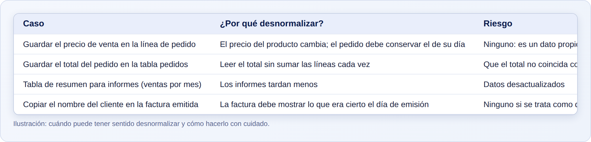
Qué ves en la imagen. Cuatro casos reales: el precio de venta en la línea (histórico, sin riesgo), el total en el pedido (riesgo: que no coincida con las líneas), una tabla de resumen para informes (riesgo: datos desactualizados) y la copia del nombre en una factura (histórico, correcto). Cada uno con la forma de protegerlo.
total a pedidos (dato calculado, redundante a propósito).JOIN: es el beneficio.ALTER TABLE pedidos ADD COLUMN total numeric(10, 2); UPDATE pedidos p SET total = ( SELECT sum(l.cantidad * pr.precio) FROM lineas_pedido l JOIN productos pr ON pr.id = l.producto_id WHERE l.pedido_id = p.id ); SELECT id, total FROM pedidos ORDER BY id;
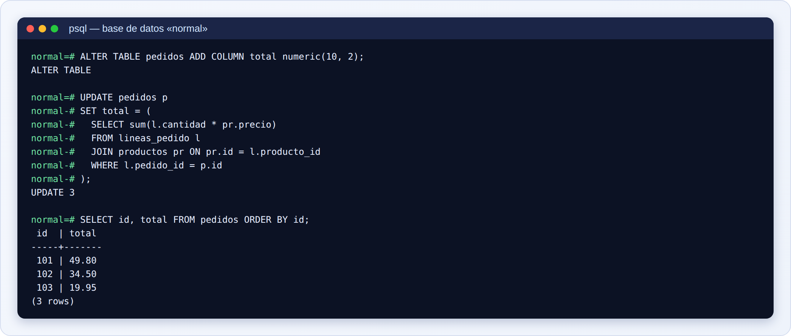
Qué ves en la imagen. ALTER TABLE ... ADD COLUMN total añade la columna. El UPDATE rellena cada pedido con la suma de cantidad × precio de sus líneas, usando una subconsulta. UPDATE 3 indica que se actualizaron tres pedidos. Ahora SELECT id, total FROM pedidos da el total sin ninguna unión. (El pedido 101: 2 × 19,95 + 1 × 9,90 = 49,80.)
UPDATE lineas_pedido SET cantidad = 5 WHERE pedido_id = 101 AND producto_id = 1; -- Comparamos el total guardado con el total recalculado SELECT p.id, p.total AS total_guardado, sum(l.cantidad * pr.precio) AS total_real FROM pedidos p JOIN lineas_pedido l ON l.pedido_id = p.id JOIN productos pr ON pr.id = l.producto_id GROUP BY p.id, p.total ORDER BY p.id;
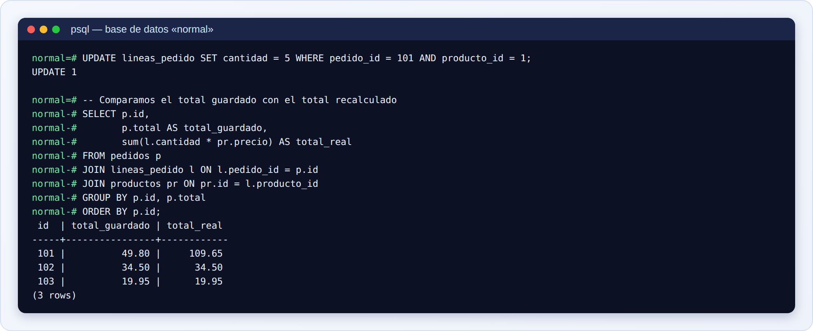
Qué ves en la imagen. Se cambia la cantidad de camisetas del pedido 101 de 2 a 5. La consulta compara el total_guardado con el total_real (recalculado sumando las líneas): el pedido 101 tiene guardado 49,80 pero el total real es 109,65. Los otros dos pedidos siguen coincidiendo. Esta consulta de control es la forma de detectar que la redundancia se ha desincronizado.
Guardar precio_venta en la línea de pedido: es un dato histórico, no un error.
Una tienda con 50 millones de pedidos guarda el total en cada uno porque calcularlo sumando las líneas, cada vez que se muestra un listado, era demasiado lento. Un proceso recalcula el total cada vez que cambia una línea y otro lo verifica cada noche.
Mide antes de desnormalizar. Con los índices adecuados (Parte 18), muchas consultas con JOIN son muy rápidas. Desnormaliza solo después de medir un problema real de rendimiento.
Mantener la coherencia. Hay tres mecanismos principales: triggers (código que se ejecuta automáticamente al cambiar una línea), vistas materializadas (resultados guardados que se refrescan) y la propia aplicación (que recalcula). Cada uno tiene ventajas y riesgos; se ven en las Partes 5 y 6.
Columnas generadas. PostgreSQL permite columnas que se calculan automáticamente a partir de otras columnas de la misma fila (por ejemplo, un importe con IVA). No sirven para totales de varias filas.
Desnormalizar para análisis. En almacenes de datos para informes (data warehouses), la desnormalización es la norma por diseño: se lee mucho y se escribe poco.
total con sum(cantidad * precio) agrupada por pedido (como la figura 4.6-c).lineas_pedido que recalcule el total del pedido afectado, o un recálculo desde la aplicación dentro de la misma transacción (Partes 5 y 6).Desnormalizar sin ningún mecanismo de control: nadie comprueba ni recalcula, y los datos se desincronizan en silencio.
-- Mal: dato calculado sin nada que lo mantenga ni lo compruebe ALTER TABLE pedidos ADD COLUMN total numeric(10, 2);
Todo dato repetido a propósito debe tener: (1) una razón escrita, (2) una forma de mantenerlo coherente y (3) una consulta que compruebe que lo es.
Para cada dato duplicado de tu diseño, responde: ¿es histórico o calculado? ¿Cómo lo mantengo? ¿Cómo lo compruebo? Si no tienes respuesta a las tres, quítalo.
Son los errores de diseño que más se repiten en proyectos reales. Reconocerlos ahorra mucho trabajo.
Para detectar los problemas cuando todavía es barato corregirlos: en el papel, no con millones de filas.
Casi todos los problemas que verás en bases de datos heredadas son variantes de los mismos cinco o seis errores.
Los errores principales:
| Error | Síntoma | Solución |
|---|---|---|
| Columnas repetidas | producto1, producto2... | Tabla aparte con una fila por elemento |
| Listas dentro de una celda | «Camiseta, Gorra» | Una fila por valor (1FN) |
| Mezclar entidades | Cliente, producto y pedido en una tabla | Una tabla por entidad |
| Tabla «clave-valor» para todo (EAV) | (entidad, atributo, valor) | Columnas reales con tipos y reglas |
| Datos calculados sin control | Totales desactualizados | Mecanismo de actualización y comprobación (4.6) |
| Normalizar de más | Decenas de tablas de una columna | Mantener juntos los datos que siempre se usan juntos y no se repiten |
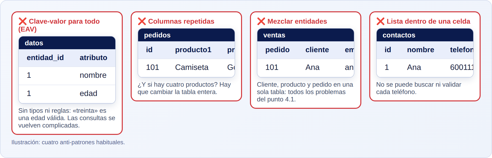
Qué ves en la imagen. Cuatro tarjetas con un ejemplo y su problema: la tabla clave-valor (sin tipos ni reglas), las columnas repetidas, la mezcla de entidades y la lista en una celda.
-- Anti-patrón: tabla «clave-valor» para guardarlo todo CREATE TABLE datos ( entidad_id integer, atributo text, valor text ); INSERT INTO datos VALUES (1, 'nombre', 'Ana García'), (1, 'email', 'ana@ejemplo.com'), (1, 'edad', 'treinta'), (2, 'nombre', 'Luis Pérez'), (2, 'email', 'luis@ejemplo.com'); -- Para ver nombre y email en una fila hay que desmontar y volver a montar SELECT entidad_id, max(valor) FILTER (WHERE atributo = 'nombre') AS nombre, max(valor) FILTER (WHERE atributo = 'email') AS email FROM datos GROUP BY entidad_id ORDER BY entidad_id; -- Y nada impide guardar disparates: la edad es texto SELECT valor FROM datos WHERE atributo = 'edad';
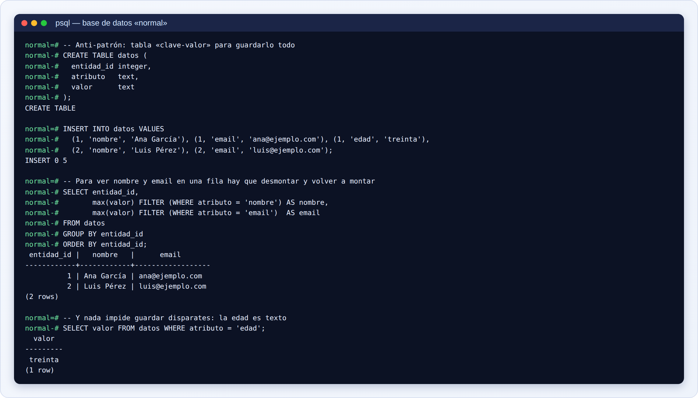
Qué ves en la imagen. La tabla datos guarda cada atributo de cada entidad como una fila (entidad_id, atributo, valor). Parece flexible, pero: para ver el nombre y el email en una sola fila hay que usar max(...) FILTER (WHERE ...) y GROUP BY (una consulta complicada que crece con cada atributo); valor es siempre texto, así que la edad «treinta» se acepta sin problema; no hay NOT NULL, ni UNIQUE, ni claves extranjeras; y el gestor no puede ayudarte a validar nada. Una tabla normal con las columnas nombre, email y edad integer resuelve todo esto.
Una tabla pedidos con columnas producto1, producto2 y producto3: ¿qué pasa con el cuarto producto?
Un sistema de «formularios configurables» se montó con una tabla clave-valor para todo. Un año después, los informes más sencillos tardaban minutos y había edades como «n/a», «treinta» y «-1» en la misma columna.
Normalizar de más. Separar cada columna en su propia tabla (una tabla de nombres, otra de apellidos...) complica las consultas sin eliminar ninguna redundancia real. La regla: separa cuando hay datos repetidos o una cosa con vida propia, no por sistema.
Cuando el esquema es realmente variable. Para datos que cambian mucho de forma y no se consultan por campo (configuraciones, formularios), PostgreSQL ofrece la columna jsonb (Parte 6), que da flexibilidad con soporte de consulta e índices. Es mejor que EAV, pero sigue sin darte tipos ni restricciones por campo, así que úsala con criterio.
Detectar el problema pronto. La señal más fiable es que las consultas sencillas se vuelven complicadas. Si leer algo obvio exige un max(...) FILTER, algo va mal en el diseño.
facturas(id, cliente, direccion_cliente, producto1, precio1, producto2, precio2).clientes(id, nombre, direccion), productos(id, nombre, precio), facturas(id, cliente_id) y lineas_factura(factura_id, producto_id, cantidad, precio_venta).producto1, precio1, producto2, precio2. De 3FN: direccion_cliente, que depende del cliente y no de la factura.CREATE TABLE personas ( id integer GENERATED ALWAYS AS IDENTITY PRIMARY KEY, nombre text NOT NULL, email text NOT NULL UNIQUE, edad integer CHECK (edad BETWEEN 0 AND 130) );
Usar la flexibilidad como excusa para no diseñar («guardo todo como clave-valor y así no tengo que cambiar nunca la estructura»). Se paga después, en consultas, rendimiento y calidad de datos.
-- Mal: nada impide guardar disparates INSERT INTO datos VALUES (1, 'edad', 'treinta');
Diseña columnas reales, con tipos y restricciones. Cambiar la estructura (añadir una columna) es fácil y está soportado; recuperar la calidad de datos perdida no.
Revisa tu diseño con la tabla de errores: ¿hay columnas repetidas, listas en celdas, entidades mezcladas, tablas clave-valor o datos calculados sin control?
EXCEPT.GROUP BY ... HAVING count(DISTINCT ...) > 1, pero se deciden con el negocio.| Término | Significado |
|---|---|
| Redundancia | Guardar el mismo dato en más de un sitio |
| Anomalía | Problema que causa la redundancia (de modificación, de inserción o de borrado) |
| Normalización | Repartir los datos en tablas para eliminar la redundancia |
| Forma normal (1FN, 2FN, 3FN) | Cada una de las tres comprobaciones de un buen reparto |
| Dependencia | A determina B: sabiendo A, se sabe B |
| Dependencia transitiva | A determina B y B determina C: C depende de A «a través de» B |
| Valor atómico | Valor que no se puede dividir con sentido |
| Clave compuesta | Clave formada por varias columnas |
| Desnormalizar | Repetir un dato a propósito, con razón y control |
| EAV | Anti-patrón de tabla clave-valor (entidad, atributo, valor) |
EXCEPT | Operación SQL que devuelve las filas de un resultado que no están en otro |
CREATE TABLE ... AS SELECT | Crea una tabla a partir del resultado de una consulta |
telefono1, telefono2).SELECT A FROM t GROUP BY A HAVING count(DISTINCT B) > 1: 0 filas significa que se cumple en los datos.EXCEPT en los dos sentidos: 0 filas en ambos.Si has acertado 8 o más, estás listo para la Parte 5. Si no, repasa los puntos de las preguntas falladas.